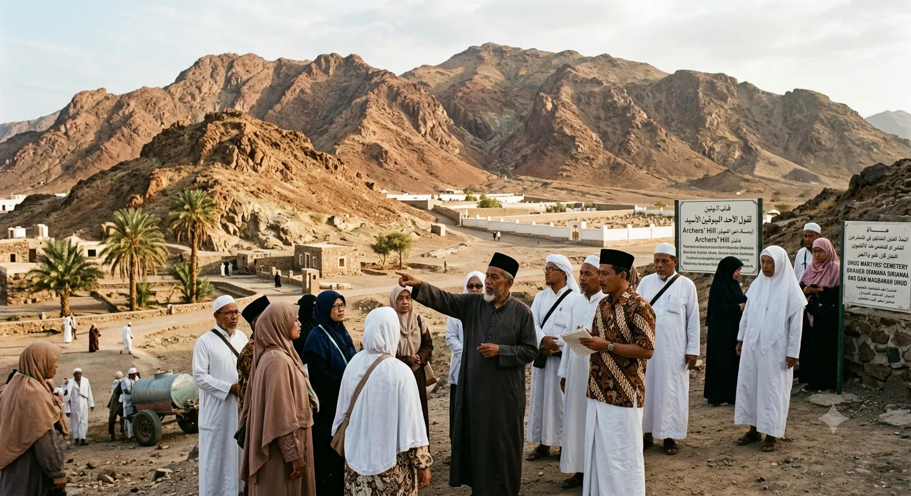

1. Air Mata Bahagia di Pelataran Ka'bah
Suasana haru tak terbendung menyelimuti rombongan jamaah Umroh AS-SIDDIQ saat tiba di pelataran Mataf Masjidil Haram Makkah. Mbah Maimunah, seorang nenek berusia 78 tahun asal sebuah desa kecil di Jawa Tengah, meneteskan air mata kebahagiaan kala jemari tangannya yang gemetar untuk pertama kalinya dapat mengusap kain Kiswah Ka'bah.
Bagi Mbah Maimunah, momen tersebut adalah puncak dari penantian panjang dan impian suci yang ia rajut selama lebih dari dua dekade.
2. Menabung Koin Demi Koin dari Anyaman Bambu
Kehidupan Mbah Maimunah sangatlah bersahaja. Sehari-hari beliau menggantungkan hidup dari membuat dan menjual tampah serta kerajinan anyaman bambu di pasar tradisional. Dari setiap rupiah keuntungan yang ia peroleh, sebesar Rp 5.000 hingga Rp 10.000 selalu ia sisihkan ke dalam celengan gerabah buatan sendiri.
Meskipun penghasilannya tak menentu, niatnya untuk berangkat ke Baitullah tak pernah padam. Ketekunan menabung selama lebih dari 20 tahun akhirnya berbuah manis saat tabungannya dinyatakan cukup untuk mendaftar paket umroh reguler bersama AS-SIDDIQ Travel.

3. Layanan Ramah Lansia & Pendampingan Penuh Kasih Sayang
Mengingat usia Mbah Maimunah yang telah lanjut serta keterbatasan fisik, tim Mutawwif AS-SIDDIQ memberikan perhatian dan pendampingan ekstra ramah lansia. Mulai dari penyediaan kursi roda di bandara, prioritas pendorongan saat Thawaf dan Sa'i, hingga pendampingan menu makanan khusus di restoran hotel.
Ustadz pembimbing merangkul Mbah Maimunah dengan sabar selama melintasi lautan manusia di Masjidil Haram, memastikan beliau dapat beribadah dengan tenang, aman, dan tanpa rasa lelah berlebih.
4. Pesan Inspiratif Untuk Umat Islam
Kisah Mbah Maimunah mengajarkan kita semua bahwa ibadah umroh dan haji bukanlah semata milik mereka yang bergelimang harta, melainkan milik mereka yang memiliki keteguhan niat dan keikhlasan ikhtiar. Allah SWT tidak memanggil mereka yang mampu, tetapi Allah memampukan mereka yang rindu dan berikhtiar sungguh-sungguh.